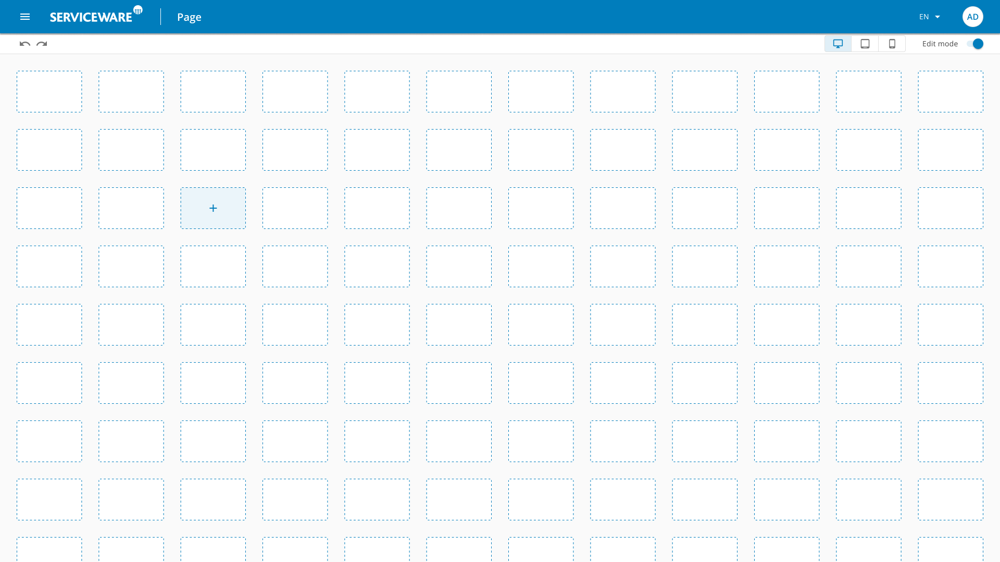
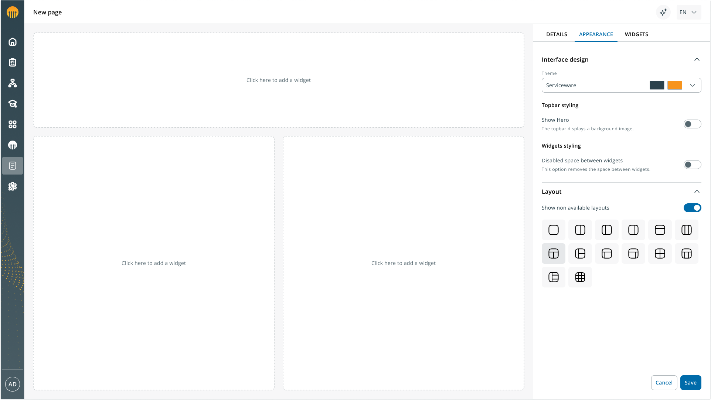
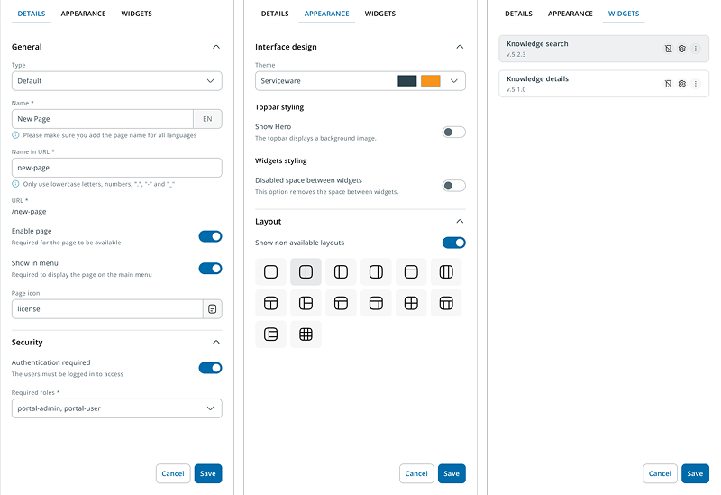

Contexto
El reto
Serviceware Portal es la plataforma que actúa como punto de acceso unificado a las distintas aplicaciones del ecosistema de productos de Serviceware. Su arquitectura basada en widgets permite a las organizaciones personalizar el portal según sus necesidades, adaptándolo a diferentes roles, contextos y dispositivos. Los usuarios con rol administrador son los responsables de crear las distintas pantallas de la herramienta y gestionar su contenido a través de widgets.
Durante el proceso de migración del Portal 2.5 a Portal 3.0 —un rediseño completo que adoptaba la nueva versión del Design System (Code Blue 3.0) y una nueva tecnología (PrimeNG)—, al analizar en profundidad el flujo de configuración de páginas detecté un problema más estructural de lo que parecía inicialmente. La distribución de widgets se basaba en un grid de celdas donde cada widget partía siempre de un tamaño genérico (2 columnas × 1 fila), obligando al administrador a redimensionarlo manualmente como primer paso cada vez que añadía uno nuevo. Además, el flujo completo debía repetirse nuevamente para la versión mobile.
El insight más relevante llegó del research: la mayoría de los administradores configuraban páginas con uno o dos widgets como máximo. La pregunta ya no era cómo simplificar el grid, sino si tenía sentido seguir pidiendo al administrador que diseñara páginas cuando lo que necesitaba era configurar contenido.
Mi rol
He sido el Product Designer del equipo Portal desde el inicio del proyecto en 2019. En este proyecto lideré el rediseño completo del flujo de configuración de páginas, desde el discovery inicial y la definición conceptual hasta la entrega de diseños finales y el soporte durante la implementación.
Proceso
Cambiar el modelo mental: de construir a configurar
Replantear el problema fue el primer paso. El grid asumía que el administrador actuaba como constructor de páginas, tomando decisiones constantes sobre posición, tamaño y distribución de widgets. Pero la realidad era que los administradores no querían diseñar páginas, sino configurar contenido para resolver objetivos concretos.
La decisión fue cambiar ese proceso: en lugar de pedir al administrador que construyera la página desde cero, propuse un sistema basado en layouts preconfigurados que solo necesitaran ser rellenados con widgets, eliminando la necesidad de configurar el layout dos veces para desktop y mobile.
Definir los templates desde el uso real
Para decidir qué layouts debían formar parte del sistema, realicé un proceso de discovery combinando sesiones con consultores internos, stakeholders (Product Owners, Customer Success y negocio) y benchmarking de productos similares. El resultado fue un conjunto inicial de 12 templates responsive predefinidos.


Centralizar la configuración en un panel único
Para reducir la fragmentación, decidí centralizar toda la configuración en un único panel lateral estructurado en tres pestañas: General, Apariencia y Widgets.

Impacto
El rediseño transformó el modelo de trabajo del administrador, pasando de un sistema orientado a construir páginas desde cero a elegir un layout y centrarse en configurar el contenido. El feedback de los stakeholders fue especialmente positivo, destacando la reducción de fricción y la mayor sensación de control a pesar de haber reducido flexibilidad.
Aprendizajes
El problema real no siempre coincide con la petición inicial. La necesidad parecía centrarse en simplificar el grid, pero el problema estaba en el modelo mental que imponíamos al administrador.
Más flexibilidad no siempre significa mejor experiencia. Reducir decisiones mediante templates predefinidos permitió que los administradores completaran la configuración con más claridad y sensación de control.
En entornos B2B, el conocimiento operativo también es research. Triangular conocimiento de consultores internos, stakeholders y análisis de uso me permitió tomar decisiones bien fundamentadas sin un proceso formal de user research recurrente.